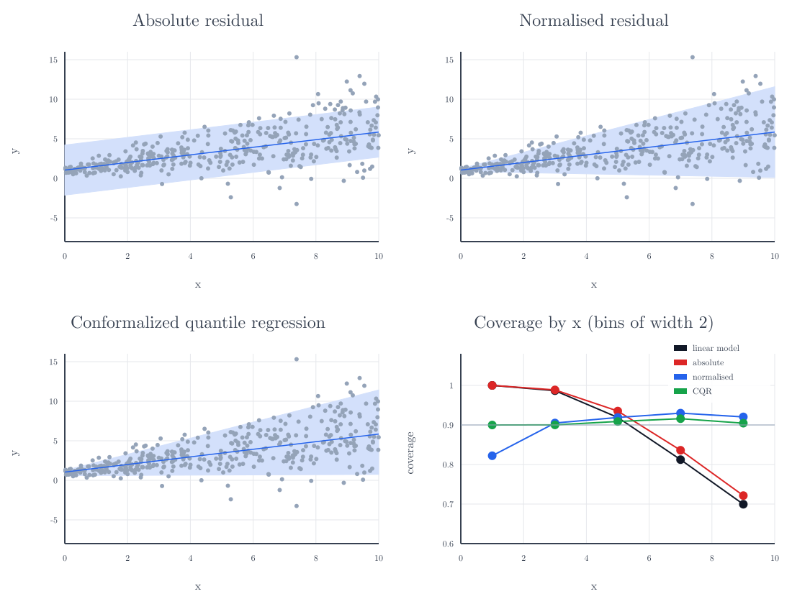
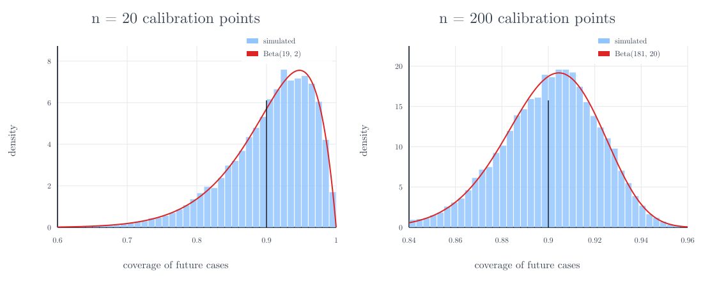
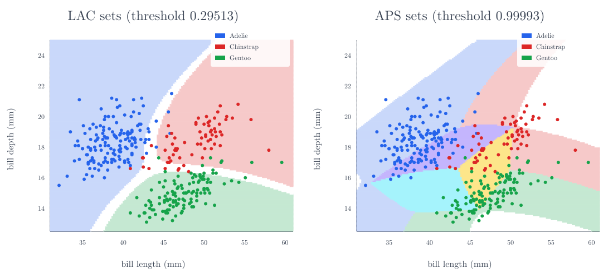

Conformal Prediction: Coverage Without Assumptions
Abstract
How can any model's predictions be given error bars that are guaranteed to hold, without assuming the model is right? Split conformal prediction calibrates a set or interval on held-out data. It covers a new case with probability at least \(1-\alpha\) whenever the calibration and new data are exchangeable. This report derives the guarantee and the exact coverage law. The coverage is \(k/(n+1)\) on average, and the coverage a single calibration set delivers is Beta\((k,n+1-k)\) distributed. Simulations reproduce both to within simulation error. With noise that grows with \(x\), a linear model's classical interval and the absolute-residual conformal interval both cover 100% where the noise is small and about 70% where it is large. Conformalized quantile regression covers 90–92% in every region and stays at 91% under a covariate shift. On the Palmer penguins, conformal sets around a naive Bayes classifier cover 90.5% overall, as predicted. They cover only 77% of Chinstraps, and class-conditional calibration raises that to 92%. The library gained normalised and quantile-band regression scores, class-conditional and non-empty sets, conformal p-values and the coverage law.
The problem
A fitted model returns a point prediction: a class label, or a number. To act on it we need to know how far to trust it. Classical prediction intervals, such as those of a linear model, are exact only if the model is correctly specified: right mean, constant variance, normal errors. Class probabilities from a classifier are often badly calibrated, and a flexible model such as a nearest-neighbour rule or a boosted ensemble offers no interval at all. We want a set of labels, or an interval, that contains the true answer for a new case with a stated probability, say 90%, for any model, without assuming that the model is right or that the data follow a particular distribution.
Conformal prediction (Vovk, Gammerman and Shafer, 2005) does this. It needs one assumption: that the data used to calibrate and the new case are exchangeable. Any reordering of them is equally likely; independent draws from one distribution are the usual example. The guarantee holds in finite samples, not only asymptotically.
The method
Split conformal prediction
Divide the labelled data into a training part and a calibration part of size \(n\). Fit any model on the training part. Define a nonconformity score \(s(x,y)\) that measures how unusual the pair \((x,y)\) looks to the fitted model, such as the absolute residual \(\lvert y-\hat\mu(x)\rvert\). Compute it for every calibration pair, \(s_1,\dots,s_n\), and take
the \(k\)-th smallest score (conformal_quantile()), or \(\hat q=+\infty\) when
\(k>n\). The prediction set for a new \(x\) is every \(y\) whose score would not
exceed the threshold:
Why it works
The model is fixed once the training part is set aside, so the calibration scores and the score \(s_{n+1}\) of the new case are exchangeable too. The rank of \(s_{n+1}\) among the \(n+1\) scores is then uniform on \(\{1,\dots,n+1\}\) (ties broken at random). The new case is covered exactly when \(s_{n+1}\le s_{(k)}\), that is, when its rank is at most \(k\):
With continuous scores (no ties) the first inequality is an equality, so the coverage is less than \(1-\alpha+1/(n+1)\): the method is never far too conservative. The \(+1\) in \(n+1\) is the finite-sample correction. If \(k>n\), no finite threshold can certify the level, and the set is everything.
The coverage a given calibration set delivers
The guarantee averages over the calibration set. For one calibration set, the coverage of future cases is \(F(\hat q)\), where \(F\) is the distribution function of the score. Since \(F(s_i)\) are \(n\) independent uniforms, \(F(s_{(k)})\) is their \(k\)-th order statistic:
A calibration set of 20 at \(\alpha=0.1\) delivers coverage that varies from set
to set with standard deviation 0.062. conformal_coverage(n, alpha) returns
\(k\), \(k/(n+1)\), the Beta parameters and this standard deviation.
P-values
Equivalently, each candidate \(y\) has the conformal p-value
\(p(y)=\big(1+\#\{i:s_i\ge s(x,y)\}\big)/(n+1)\), and \(C(x)=\{y:p(y)>\alpha\}\)
(up to ties). The p-value of the true label is super-uniform:
\(P(p(Y)\le t)\le t\). SplitConformalClassifier::p_values() returns them.
Scores for classification
With fitted class probabilities \(\hat p_1(x),\dots,\hat p_K(x)\):
- *LAC* (least ambiguous set-valued classifier; Sadinle, Lei and Wasserman, 2019): \(s(x,y)=1-\hat p_y(x)\). The set is every class with \(\hat p_y(x)\ge1-\hat q\). This gives the smallest average set size among sets with the coverage guarantee, when the probabilities are correct. But it can return empty sets, and its coverage is uneven: high for easy cases, low for hard ones.
- *APS* (adaptive prediction sets; Romano, Sesia and Candès, 2020): \(s(x,y)=\sum_{j:\hat p_j\ge\hat p_y}\hat p_j\), the total probability of the classes at least as likely as \(y\). The set is the most likely classes while their total probability stays at most \(\hat q\), so it grows where the model is uncertain. With this deterministic rule it is empty when the top class alone has probability above \(\hat q\).
- *Non-empty sets* (
nonempty): add the most probable class to an empty set. The sets only grow, so the guarantee holds, with some extra coverage. - *Class-conditional (Mondrian) calibration* (
class_conditional) computes one threshold per class from that class's calibration rows. The guarantee then holds within every class, \(P(Y\in C(X)\mid Y=c)\ge1-\alpha\), which matters when one class is rare or hard. The price is fewer calibration points per threshold.
Scores for regression
SplitConformalRegressor uses \(s=\max(\ell(x)-y,\;y-u(x))/\sigma(x)\) for a
base band \([\ell,u]\) and scale \(\sigma>0\), giving the interval
\([\ell(x)-\hat q\sigma(x),\;u(x)+\hat q\sigma(x)]\). Three choices give the
standard methods:
- *absolute residual* (Lei et al., 2018): \(\ell=u=\hat\mu\), \(\sigma=1\). The interval \(\hat\mu(x)\pm\hat q\) has the same width everywhere.
- *normalised residual* (
normalized()): \(\ell=u=\hat\mu\) and \(\sigma(x)\) a fitted estimate of the noise spread. The width grows where the noise does. - *conformalized quantile regression* (CQR; Romano, Patterson and Candès,
2019;
quantile_band()): \(\ell,u\) fitted \(\alpha/2\) and \(1-\alpha/2\) quantile regressions, \(\sigma=1\). The fitted band is widened (\(\hat q>0\)) or narrowed (\(\hat q<0\)) just enough to make its coverage exact.
All three have the same marginal guarantee. They differ in conditional coverage, the coverage at a particular \(x\), which no method can guarantee without assumptions (Lei and Wasserman, 2014). A good score makes it roughly constant.
Simple examples
Nine calibration points by hand
A regression model's absolute residuals on nine calibration points are 0.3, 1.2, 0.4, 2.5, 0.9, 0.1, 1.7, 0.6 and 0.8. For \(\alpha=0.2\), \(k=\lceil10\times0.8\rceil=8\): the threshold is the 8th smallest residual, 1.7, and every interval is \(\hat\mu(x)\pm1.7\). A new point with residual 1.0 is covered, with p-value \((1+\#\{s_i\ge1\})/10=(1+3)/10=0.4\). The coverage law is \(k/(n+1)=0.8\) on average, Beta(8, 2) given the calibration set.
For classification with classes a, b and c, take nine calibration rows with true classes and probabilities as in the first table below. LAC scores are \(1-\hat p_y\), and APS scores add the probabilities of the classes at least as likely as the true one.
#include <dm/dm.hpp>
using DF = dm::dstruct::DataFrame;
int main() {
// Regression.
const std::vector<double> residuals{0.3, 1.2, 0.4, 2.5, 0.9, 0.1, 1.7, 0.6,
0.8};
const dm::stats::SplitConformalRegressor reg(std::vector<double>(9, 0.0),
residuals, {.alpha = 0.2});
const auto law = reg.coverage();
std::print("Regression: q = {}, interval for a prediction of 5: [{}, {}], k = {}, mean coverage {}, Beta({}, {})\n\n",
reg.quantile(), reg.predict_interval(5.0).first,
reg.predict_interval(5.0).second, law.rank, law.mean, law.beta_a,
law.beta_b);
// Classification.
const std::vector<std::string> classes{"a", "b", "c"};
const std::vector<std::vector<double>> probs{{0.7, 0.2, 0.1},
{0.5, 0.4, 0.1},
{0.2, 0.6, 0.2},
{0.1, 0.8, 0.1},
{0.3, 0.3, 0.4},
{0.6, 0.3, 0.1},
{0.2, 0.2, 0.6},
{0.4, 0.5, 0.1},
{0.1, 0.1, 0.8}};
const std::vector<std::string> truth{"a", "b", "b", "b", "a", "a", "c", "a",
"c"};
const dm::stats::SplitConformalClassifier lac(probs, truth, classes,
{.alpha = 0.2,.score = "lac"});
const dm::stats::SplitConformalClassifier aps(probs, truth, classes,
{.alpha = 0.2,.score = "aps"});
std::vector<double> pa, pb, pc;
for (const auto &p : probs)
pa.push_back(p[0]), pb.push_back(p[1]), pc.push_back(p[2]);
DF cal;
cal.add_column("true class", truth);
cal.add_column("p(a)", pa);
cal.add_column("p(b)", pb);
cal.add_column("p(c)", pc);
cal.add_column("LAC score", lac.calibration_scores());
cal.add_column("APS score", aps.calibration_scores());
std::print("{}\n\nThresholds: LAC {}, APS {}\n\n", cal.to_md(2),
lac.quantile(), aps.quantile());
const std::vector<std::vector<double>> queries{{0.85, 0.10, 0.05},
{0.45, 0.45, 0.10},
{0.35, 0.33, 0.32}};
std::vector<std::string> q_text, lac_set, aps_set, lac_p;
auto join = [](const std::vector<std::string> & s) {
std::string out = "{";
for (std::size_t i = 0; i < s.size(); ++i)
out += (i ? ", " : "") + s[i];
return out + "}";
};
for (const auto &q : queries) {
q_text.push_back(std::format("({}, {}, {})", q[0], q[1], q[2]));
lac_set.push_back(join(lac.predict_set(q))), aps_set.push_back(
join(aps.predict_set(q)));
const auto p = lac.p_values(q);
lac_p.push_back(std::format("{:.1f}, {:.1f}, {:.1f}", p[0], p[1], p[2]));
}
DF sets;
sets.add_column("probabilities (a, b, c)", q_text);
sets.add_column("LAC set", lac_set);
sets.add_column("LAC p-values", lac_p);
sets.add_column("APS set", aps_set);
std::print("{}\n", sets.to_md());
}Regression: q = 1.7, interval for a prediction of 5: [3.3, 6.7], k = 8, mean coverage 0.8, Beta(8, 2)
| true class | p(a) | p(b) | p(c) | LAC score | APS score |
|---|---|---|---|---|---|
| a | 0.7 | 0.2 | 0.1 | 0.3 | 0.7 |
| b | 0.5 | 0.4 | 0.1 | 0.6 | 0.9 |
| b | 0.2 | 0.6 | 0.2 | 0.4 | 0.6 |
| b | 0.1 | 0.8 | 0.1 | 0.2 | 0.8 |
| a | 0.3 | 0.3 | 0.4 | 0.7 | 1.0 |
| a | 0.6 | 0.3 | 0.1 | 0.4 | 0.6 |
| c | 0.2 | 0.2 | 0.6 | 0.4 | 0.6 |
| a | 0.4 | 0.5 | 0.1 | 0.6 | 0.9 |
| c | 0.1 | 0.1 | 0.8 | 0.2 | 0.8 |
Thresholds: LAC 0.6, APS 0.9
| probabilities (a, b, c) | LAC set | LAC p-values | APS set |
|---|---|---|---|
| (0.85, 0.1, 0.05) | {a} | 1.0, 0.1, 0.1 | {a} |
| (0.45, 0.45, 0.1) | {a, b} | 0.4, 0.4, 0.1 | {a, b} |
| (0.35, 0.33, 0.32) | {} | 0.2, 0.2, 0.2 | {a, b} |
The regression threshold is the 8th smallest residual, 1.7, as computed by hand. In the classification table, the eighth smallest of the nine LAC scores is 0.6, so a class is admitted when its probability is at least 0.4. The eighth smallest APS score is 0.9, so classes are admitted in order of probability while their running total stays at or below 0.9.
The three queries show how the two scores behave. A confident prediction (0.85 for a) gives the singleton \(\{a\}\) under both. A tie between a and b gives \(\{a,b\}\) under both. For a near-uniform row, no class reaches probability 0.4, so LAC returns the empty set. Every class's p-value is \((1+1)/10=0.2\), not above \(\alpha=0.2\). An empty set is a definite statement that the case looks unlike every calibration example, and it still counts as a miss for the guarantee. APS returns \(\{a,b\}\) for this row, because the total 0.68 stays below 0.9.
Heteroscedastic regression
Responses \(y=1+0.5x+(0.2+0.3x)\varepsilon\) with \(x\sim U(0,10)\) and \(\varepsilon\sim N(0,1)\): the mean is linear, but the noise standard deviation grows from 0.2 to 3.2. There are 500 training points, 500 calibration points and 5000 test points, and \(\alpha=0.1\). Four intervals are compared:
- the linear model's classical 90% prediction interval, which assumes constant variance;
- the absolute-residual conformal interval around the same linear fit;
- the normalised conformal interval, with \(\sigma(x)\) a linear regression of the training residuals' absolute values on \(x\);
- CQR with linear quantile regressions for the 5% and 95% quantiles.
#include <dm/dm.hpp>
using DF = dm::dstruct::DataFrame;
DF draw(dm::random::Xoshiro256StarStar &rng, std::size_t n, double lo = 0.0,
double hi = 10.0) {
std::vector<double> x(n), y(n);
for (std::size_t i = 0; i < n; ++i) {
x[i] = rng.uniform(lo, hi);
y[i] = 1.0 + 0.5 * x[i] + (0.2 + 0.3 * x[i]) * rng.normal(0.0, 1.0);
}
DF d;
d.add_column("x", x);
d.add_column("y", y);
return d;
}
int main() {
std::filesystem::create_directories("build");
dm::random::Xoshiro256StarStar rng(7);
const DF train =
draw(rng, 500), cal = draw(rng, 500), test = draw(rng, 5000);
const auto y_cal =
cal.get_column<double>("y").values(), y_test =
test.get_column<double>("y").values();
const auto x_test = test.get_column<double>("x").values();
const dm::stats::LM lm(train, "y ~ x");
// Spread model: absolute training residuals regressed on x.
DF spread = train;
const auto fit_train = lm.predict(train);
std::vector<double> abs_res;
for (std::size_t i = 0; i < fit_train.size(); ++i)
abs_res.push_back(std::abs(train.double_at("y", i) - fit_train[i]));
spread.add_column("abs_res", abs_res);
const dm::stats::LM scale_model(spread, "abs_res ~ x");
auto scale = [&](const DF & d) {
auto s = scale_model.predict(d);
for (auto &v : s) v = std::max(v, 0.05);
return s;
};
const dm::stats::QuantileRegression q05(train, "y ~ x", {.quantile = 0.05}), q95(train, "y ~ x", {.quantile = 0.95});
const auto mu_cal = lm.predict(cal), mu_test = lm.predict(test);
const dm::stats::SplitConformalRegressor absolute(mu_cal, y_cal,
{.alpha = 0.1});
const auto normalised =
dm::stats::SplitConformalRegressor::normalized(mu_cal, scale(cal),
y_cal, {.alpha = 0.1});
const auto cqr =
dm::stats::SplitConformalRegressor::quantile_band(q05.predict(cal),
q95.predict(cal),
y_cal, {.alpha = 0.1});
const auto classical =
lm.predict(test, dm::stats::PredictionInterval::Prediction, 0.9);
const std::size_t m = y_test.size();
dm::stats::SplitConformalRegressor::Evaluation lm_ev;
for (std::size_t i = 0; i < m; ++i) {
lm_ev.covered.push_back(y_test[i] >= classical.lower[i] &&
y_test[i] <= classical.upper[i]);
lm_ev.widths.push_back(classical.upper[i] - classical.lower[i]);
lm_ev.coverage +=
lm_ev.covered.back() / double(m), lm_ev.average_width +=
lm_ev.widths.back() / double(m);
}
const auto ones = std::vector<double>(m, 1.0);
const std::vector<std::pair<std::string, dm::stats::SplitConformalRegressor::Evaluation>> evals{{"linear-model interval", lm_ev}, {"conformal, absolute", absolute.evaluate(mu_test, y_test)}, {"conformal, normalised", normalised.evaluate(mu_test, mu_test, scale(test), y_test)}, {"conformal, CQR", cqr.evaluate(q05.predict(test), q95.predict(test), ones, y_test)},};
std::print("Calibrated quantiles: absolute {:.4f}, normalised {:.4f}, CQR {:.4f}\n\n",
absolute.quantile(), normalised.quantile(), cqr.quantile());
// Coverage and mean width overall and in five bins of x.
std::vector<std::string> names;
std::vector<double> overall, width;
std::vector<std::vector<double>> bins(5);
std::vector<std::vector<double>> bin_cov(evals.size(),
std::vector<double>(5));
for (std::size_t e = 0; e < evals.size(); ++e) {
const auto & [name, ev] = evals[e];
names.push_back(name), overall.push_back(ev.coverage), width.push_back(
ev.average_width);
std::vector<double> hit(5, 0.0), cnt(5, 0.0);
for (std::size_t i = 0; i < m; ++i) {
const std::size_t b =
std::min<std::size_t>(4, std::size_t(x_test[i] / 2.0));
hit[b] += ev.covered[i], cnt[b] += 1.0;
}
for (std::size_t b = 0; b < 5; ++b)
bin_cov[e][b] = hit[b] / cnt[b], bins[b].push_back(hit[b] / cnt[b]);
}
DF table;
table.add_column("interval", names);
table.add_column("coverage", overall);
table.add_column("mean width", width);
for (std::size_t b = 0; b < 5; ++b)
table.add_column(std::format("x in [{}, {})", 2 * b, 2 * b + 2), bins[b]);
DF::MarkdownOptions md;
md.digits = 3;
std::print("{}\n\n", table.to_md(md));
// Covariate shift: test points only from x in [8, 10].
const DF shifted = draw(rng, 5000, 8.0, 10.0);
const auto ys = shifted.get_column<double>("y").values();
const auto mus = lm.predict(shifted);
const auto cls =
lm.predict(shifted, dm::stats::PredictionInterval::Prediction, 0.9);
double lm_cov = 0.0;
for (std::size_t i = 0; i < ys.size(); ++i)
lm_cov +=
(ys[i] >= cls.lower[i] && ys[i] <= cls.upper[i]) / double(ys.size());
const auto ones_s = std::vector<double>(ys.size(), 1.0);
DF shift;
shift.add_column("interval", names);
shift.add_column("coverage when every test x is in [8, 10]",
std::vector<double>{lm_cov,
absolute.evaluate(mus, ys).coverage,
normalised.evaluate(mus, mus,
scale(shifted), ys).coverage,
cqr.evaluate(q05.predict(shifted),
q95.predict(shifted),
ones_s, ys).coverage});
std::print("{}\n", shift.to_md(md));
// Figure: three conformal bands over 400 test points, and coverage by bin.
const auto blue = dm::RGB{37, 99, 235}, grey = dm::RGB{148, 163, 184};
std::vector<double> grid;
for (int i = 0; i <= 100; ++i) grid.push_back(0.1 * i);
DF g;
g.add_column("x", grid);
const auto mu_g =
lm.predict(g), s_g =
scale(g), l_g = q05.predict(g), u_g = q95.predict(g);
std::vector<double> px(x_test.begin(), x_test.begin() + 400), py(
y_test.begin(), y_test.begin() + 400);
auto fig = dm::graphics::RLayout::create(2, 2);
for (int panel = 0; panel < 3; ++panel) {
std::vector<double> lo, hi;
for (std::size_t i = 0; i < grid.size(); ++i) {
const auto[a, b] =
panel == 0 ? absolute.predict_interval(mu_g[i]) : panel == 1
? normalised.predict_interval(mu_g[i], mu_g[i], s_g[i])
: cqr.predict_interval(l_g[i], u_g[i], 1.0);
lo.push_back(a), hi.push_back(b);
}
std::vector<double> bx = grid, by = hi;
bx.insert(bx.end(), grid.rbegin(), grid.rend());
by.insert(by.end(), lo.rbegin(), lo.rend());
auto p = dm::graphics::RPlot::create();
p.polygon(bx, by, dm::graphics::tint(blue, 0.8), true).points(px, py,
grey, 3.0).lines(grid, mu_g, blue, 1.5);
p.x_limits(0.0, 10.0).y_limits(-8.0, 16.0).x_label("x").y_label("y").title(panel == 0 ? "Absolute residual" : panel == 1 ? "Normalised residual" : "Conformalized quantile regression");
fig.add(p);
}
auto cov = dm::graphics::RPlot::create();
const std::vector<double> centres{1, 3, 5, 7, 9};
const dm::RGB colors[4] = {{17, 24, 39}, {220, 38, 38}, {37, 99, 235},
{22, 163, 74}};
const char *short_names[4] = {"linear model", "absolute", "normalised",
"CQR"};
for (std::size_t e = 0; e < evals.size(); ++e)
cov.lines(centres, bin_cov[e], short_names[e], colors[e], 2.0).points(
centres, bin_cov[e], colors[e], 6.0);
cov.lines({0.0, 10.0}, {0.9, 0.9}, grey, 1.0);
cov.x_limits(0.0, 10.0).y_limits(0.6, 1.08).title("Coverage by x (bins of width 2)").x_label("x").y_label("coverage");
fig.add(cov).size(1100, 840).fit_panels();
fig.save_svg("build/cp_bands.svg");
}Calibrated quantiles: absolute 3.1703, normalised 2.3382, CQR 0.0400
| interval | coverage | mean width | x in [0, 2) | x in [2, 4) | x in [4, 6) | x in [6, 8) | x in [8, 10) |
|---|---|---|---|---|---|---|---|
| linear-model interval | 0.886 | 5.992 | 1.000 | 0.987 | 0.919 | 0.812 | 0.700 |
| conformal, absolute | 0.898 | 6.341 | 1.000 | 0.989 | 0.935 | 0.836 | 0.721 |
| conformal, normalised | 0.898 | 5.842 | 0.822 | 0.905 | 0.919 | 0.930 | 0.920 |
| conformal, CQR | 0.906 | 5.609 | 0.900 | 0.900 | 0.909 | 0.916 | 0.904 |
| interval | coverage when every test x is in [8, 10] |
|---|---|
| linear-model interval | 0.703 |
| conformal, absolute | 0.728 |
| conformal, normalised | 0.931 |
| conformal, CQR | 0.910 |

All four intervals cover close to 90% overall: 88.6% for the linear model's interval, 89.8% for the absolute and normalised conformal intervals, and 90.6% for CQR. The conformal ones have the guarantee; the classical one is near 90% here only because the over- and under-coverage happen to balance. The bins show the difference. The linear model's interval assumes a constant noise variance, and the absolute-residual conformal interval has a constant width too. Both are much too wide where the noise is small, with 100% coverage for \(x<2\). Both are too narrow where it is large, covering only 70% and 72% for \(x\ge8\). The marginal guarantee holds by averaging over-coverage on the left with under-coverage on the right.
The two adaptive scores spread the coverage more evenly. CQR covers 90.0% to 91.6% in every bin and has the narrowest intervals on average (5.61, against 6.34 for the absolute residual). Its calibrated correction \(\hat q=0.04\) is small, because the linear quantile regressions are nearly correct here, and conformal calibration only fine-tunes them. The normalised interval covers 90–93% from \(x=2\) on but only 82% in the first bin. That is the weak point of the method: it is only as good as its spread model, here a straight line fitted to absolute residuals, floored at 0.05.
Covariate shift. When every test point comes from \(x\in[8,10]\), the calibration and test data are no longer exchangeable, and the guarantee is void. The absolute-residual interval then covers 72.8% and the classical one 70.3%. The adaptive intervals still cover 93.1% (normalised) and 91.0% (CQR). They were not guaranteed to, but their scores are roughly identically distributed across \(x\), so the shift hardly changes the score distribution.
Checking the theory
The exact marginal coverage
For continuous scores the theory gives coverage exactly \(k/(n+1)\), between \(1-\alpha\) and \(1-\alpha+1/(n+1)\). Here the scores are absolute standard normal residuals, with a fresh calibration set and test point in each of 100000 replicates.
#include <dm/dm.hpp>
int main() {
dm::random::Xoshiro256StarStar rng(11);
const int reps = 100000;
std::vector<double> ns, ks, theory, empirical, se, upper;
for (const std::size_t n : {8u, 9u, 10u, 19u, 20u, 49u, 99u, 999u}) {
const auto law = dm::stats::conformal_coverage(n, 0.1);
double hits = 0.0;
std::vector<double> cal(n);
for (int r = 0; r < reps; ++r) {
for (auto &v : cal) v = std::abs(rng.normal(0.0, 1.0));
hits +=
std::abs(rng.normal(0.0, 1.0)) <=
dm::stats::conformal_quantile(cal, 0.1);
}
ns.push_back(double(n)), ks.push_back(double(law.rank)), theory.push_back(law.mean);
empirical.push_back(hits / reps), se.push_back(std::sqrt(
law.mean * (
1.0 - law.mean) / reps));
upper.push_back(std::min(1.0, 0.9 + 1.0 / (double(n) + 1.0)));
}
dm::dstruct::DataFrame table;
table.add_column("n", ns);
table.add_column("k", ks);
table.add_column("k / (n + 1)", theory);
table.add_column("simulated coverage", empirical);
table.add_column("simulation SE", se);
table.add_column("upper bound 0.9 + 1/(n + 1)", upper);
dm::dstruct::DataFrame::MarkdownOptions md;
md.digits = 4;
md.column_digits = {{"n", 0}, {"k", 0}};
std::print("{}\n", table.to_md(md));
}| n | k | k / (n + 1) | simulated coverage | simulation SE | upper bound 0.9 + 1/(n + 1) |
|---|---|---|---|---|---|
| 8 | 9 | 1.0000 | 1.0000 | 0.0000 | 1.0000 |
| 9 | 9 | 0.9000 | 0.9010 | 0.0009 | 1.0000 |
| 10 | 10 | 0.9091 | 0.9093 | 0.0009 | 0.9909 |
| 19 | 18 | 0.9000 | 0.9003 | 0.0009 | 0.9500 |
| 20 | 19 | 0.9048 | 0.9045 | 0.0009 | 0.9476 |
| 49 | 45 | 0.9000 | 0.9006 | 0.0009 | 0.9200 |
| 99 | 90 | 0.9000 | 0.8998 | 0.0009 | 0.9100 |
| 999 | 900 | 0.9000 | 0.9009 | 0.0009 | 0.9010 |
Every simulated coverage is within about one simulation standard error of \(k/(n+1)\). The table shows the finite-sample correction at work. For \(n=8\), \(k=9>n\): no threshold can certify 90%, the set is everything, and the coverage is 1. For \(n=9\) the threshold is the largest score, with coverage exactly 0.9. For \(n=10\), \(k=10\) gives \(10/11=0.909\), and for \(n=20\), \(19/21=0.905\). The excess over 0.9 is always less than \(1/(n+1)\) and vanishes as \(n\) grows: 0.9009 at \(n=999\).
The coverage of one calibration set is Beta distributed
With standard normal errors, a calibration set with threshold \(\hat q\) covers future cases with probability exactly \(2\Phi(\hat q)-1\). Over 20000 calibration sets of size 20 and of size 200, its distribution should be Beta\((k,n+1-k)\).
#include <dm/dm.hpp>
int main() {
std::filesystem::create_directories("build");
dm::random::Xoshiro256StarStar rng(13);
auto fig = dm::graphics::RLayout::create(1, 2);
std::vector<double> ns, mean_sim, mean_th, sd_sim, sd_th, low_sim, low_th;
for (const std::size_t n : {20u, 200u}) {
const auto law = dm::stats::conformal_coverage(n, 0.1);
std::vector<double> coverage;
std::vector<double> cal(n);
for (int r = 0; r < 20000; ++r) {
for (auto &v : cal) v = std::abs(rng.normal(0.0, 1.0));
coverage.push_back(2.0 * dm::random::normal_cdf(
dm::stats::conformal_quantile(cal, 0.1)) - 1.0);
}
double m = 0.0, s = 0.0, below = 0.0;
for (const double c : coverage)
m +=
c / coverage.size(), below +=
(c < 0.85) / double(coverage.size());
for (const double c : coverage)
s += (c - m) * (c - m) / (coverage.size() - 1.0);
ns.push_back(double(n)), mean_sim.push_back(m), mean_th.push_back(
law.mean), sd_sim.push_back(std::sqrt(s)), sd_th.push_back(law.sd);
low_sim.push_back(below), low_th.push_back(dm::random::beta_cdf(
0.85, law.beta_a, law.beta_b));
// Histogram (density scale) with the Beta density.
const double lo = n == 20 ? 0.6 : 0.84, hi = n == 20 ? 1.0 : 0.96;
const int nb = 40;
std::vector<double> centres(nb), heights(nb, 0.0);
for (int b = 0; b < nb; ++b)
centres[b] = lo + (b + 0.5) * (hi - lo) / nb;
for (const double c : coverage) {
const int b = int((c - lo) / (hi - lo) * nb);
if (b >= 0 && b < nb)
heights[b] += 1.0 / (coverage.size() * (hi - lo) / nb);
}
std::vector<double> gx, gy;
for (int i = 0; i <= 300; ++i) {
const double x = lo + (hi - lo) * i / 300.0;
gx.push_back(x), gy.push_back(dm::random::beta_pdf(x, law.beta_a,
law.beta_b));
}
const double top =
1.15 * std::max(*std::max_element(heights.begin(), heights.end()),
*std::max_element(gy.begin(), gy.end()));
auto p = dm::graphics::RPlot::create();
p.bars(centres, heights, "simulated", dm::RGB{147, 197, 253},
0.9 * (hi - lo) / nb);
p.lines(gx, gy, std::format("Beta({}, {})", law.beta_a, law.beta_b),
dm::RGB{220, 38, 38}, 2.0);
p.segments({0.9}, {0.0}, {0.9}, {0.7 * top}, dm::RGB{17, 24, 39}, 1.5);
p.x_limits(lo, hi).y_limits(0.0, top).title(std::format(
"n = {} calibration points",
n)).x_label(
"coverage of future cases").y_label("density");
fig.add(p);
}
dm::dstruct::DataFrame table;
table.add_column("n", ns);
table.add_column("mean, simulated", mean_sim);
table.add_column("mean, k/(n+1)", mean_th);
table.add_column("sd, simulated", sd_sim);
table.add_column("sd, Beta", sd_th);
table.add_column("P(coverage < 0.85), simulated", low_sim);
table.add_column("P(coverage < 0.85), Beta", low_th);
dm::dstruct::DataFrame::MarkdownOptions md;
md.digits = 4;
md.column_digits = {{"n", 0}};
std::print("{}\n", table.to_md(md));
fig.size(1100, 440).fit_panels();
fig.save_svg("build/cp_beta.svg");
}| n | mean, simulated | mean, k/(n+1) | sd, simulated | sd, Beta | P(coverage < 0.85), simulated | P(coverage < 0.85), Beta |
|---|---|---|---|---|---|---|
| 20 | 0.9042 | 0.9048 | 0.0629 | 0.0626 | 0.1788 | 0.1756 |
| 200 | 0.9007 | 0.9005 | 0.0211 | 0.0211 | 0.0139 | 0.0149 |

The simulated means, standard deviations and tail probabilities agree with the Beta law to within simulation error. For example, \(P(\text{coverage}<0.85)\) is 0.179 simulated against 0.176 for \(n=20\), and 0.0139 against 0.0149 for \(n=200\). The practical message is the spread. With 20 calibration points, the average coverage is 90.5%, but about one calibration set in six delivers less than 85%, and one in 130 less than 70%. With 200, the standard deviation is 0.021. To make the coverage of this calibration set reliably close to the target, choose \(n\) from the Beta law. For example, \(n=1000\) gives a standard deviation of about 0.01.
The Palmer penguins
A naive Bayes classifier of species from bill length and depth (the two-predictor model of the naive Bayes report, 93% accurate) supplies probabilities. The 342 penguins with both measurements are split at random into thirds for training, calibration (\(n=114\)) and test, 500 times, at \(\alpha=0.1\). For \(n=114\), \(k=104\) and the expected marginal coverage is \(104/115=0.904\).
#include <dm/dm.hpp>
using DF = dm::dstruct::DataFrame;
int main() {
std::filesystem::create_directories("build");
const auto all = dm::datasets::penguins();
std::vector<std::size_t> keep;
for (std::size_t i = 0; i < all.nrows(); ++i)
if (all.optional_double_at("bill_length_mm", i) &&
all.optional_double_at("bill_depth_mm", i))
keep.push_back(i);
const DF data = all.take_rows(keep);
const std::string formula = "species ~ bill_length_mm + bill_depth_mm";
const std::size_t n = data.nrows(), third = n / 3;
std::print("Rows: {}; calibration size {}; expected coverage {:.4f}\n\n", n,
third, dm::stats::conformal_coverage(third, 0.1).mean);
struct Variant {
std::string name;
dm::stats::ConformalClassifierOptions options;
};
const std::vector<Variant> variants{{"LAC", {.alpha = 0.1,.score = "lac"}},
{"LAC, non-empty",
{.alpha = 0.1,.score = "lac",
.nonempty = true}},
{"APS", {.alpha = 0.1,.score = "aps"}},
{"APS, non-empty",
{.alpha = 0.1,.score = "aps",
.nonempty = true}},
{"LAC, class-conditional",
{.alpha = 0.1,.score = "lac",
.class_conditional = true}}};
const std::size_t V = variants.size();
std::vector<double> coverage(V, 0.0), size(V, 0.0), empty(V, 0.0), worst(
V, 1.0);
std::vector<std::vector<double>> class_cov(V, std::vector<double>(3, 0.0)), size_share(V, std::vector<double>(4, 0.0));
std::vector<std::vector<double>> coverage_draws(V);
double accuracy = 0.0;
dm::random::Xoshiro256StarStar rng(21);
const int reps = 500;
std::vector<std::string> classes;
for (int r = 0; r < reps; ++r) {
std::vector<std::size_t> idx(n);
std::iota(idx.begin(), idx.end(), 0);
for (std::size_t i = n - 1; i > 0; --i)
std::swap(idx[i],
idx[std::size_t(rng.uniform(0.0, 1.0) * double(i + 1))]);
const DF train =
data.take_rows({idx.begin(), idx.begin() + long(third)});
const DF cal =
data.take_rows({idx.begin() + long(third),
idx.begin() + long(2 * third)});
const DF test =
data.take_rows({idx.begin() + long(2 * third), idx.end()});
const dm::stats::NaiveBayesClassifier nb(train, formula);
classes = nb.classes();
const auto pc = nb.predict_detail(cal), pt = nb.predict_detail(test);
const auto yc =
cal.get_column<std::string>("species").values(), yt =
test.get_column<std::string>("species").values();
for (std::size_t i = 0; i < yt.size(); ++i)
accuracy += (pt.class_label[i] == yt[i]) / double(yt.size() * reps);
for (std::size_t v = 0; v < V; ++v) {
const dm::stats::SplitConformalClassifier cp(pc.probability, yc,
classes,
variants[v].options);
const auto ev = cp.evaluate(pt.probability, yt);
coverage[v] +=
ev.coverage / reps, size[v] +=
ev.average_set_size / reps, empty[v] += ev.empty_rate / reps;
coverage_draws[v].push_back(ev.coverage);
for (std::size_t c = 0; c < 3; ++c)
class_cov[v][c] += ev.class_coverage[c] / reps;
for (std::size_t s = 0; s < 4; ++s)
size_share[v][s] +=
ev.size_counts[s] / double(yt.size() * reps);
}
}
std::print("Naive Bayes test accuracy, averaged over splits: {:.4f}\n\n",
accuracy);
std::vector<std::string> names;
std::vector<double> sd_cov;
for (std::size_t v = 0; v < V; ++v) {
names.push_back(variants[v].name);
double m = coverage[v], s = 0.0;
for (const double c : coverage_draws[v])
s += (c - m) * (c - m) / (reps - 1.0);
sd_cov.push_back(std::sqrt(s));
}
DF table;
table.add_column("score", names);
table.add_column("coverage", coverage);
table.add_column("SD over splits", sd_cov);
for (std::size_t c = 0; c < 3; ++c) {
std::vector<double> col;
for (std::size_t v = 0; v < V; ++v) col.push_back(class_cov[v][c]);
table.add_column("coverage, " + classes[c], col);
}
table.add_column("mean set size", size);
for (std::size_t s = 0; s < 4; ++s) {
std::vector<double> col;
for (std::size_t v = 0; v < V; ++v) col.push_back(size_share[v][s]);
table.add_column(std::format("share of size {}", s), col);
}
DF::MarkdownOptions md;
md.digits = 3;
std::print("{}\n\n", table.to_md(md));
// One split for the figure: which set each point of the plane would get (LAC and APS).
std::vector<std::size_t> idx(n);
std::iota(idx.begin(), idx.end(), 0);
dm::random::Xoshiro256StarStar rng2(3);
for (std::size_t i = n - 1; i > 0; --i)
std::swap(idx[i],
idx[std::size_t(rng2.uniform(0.0, 1.0) * double(i + 1))]);
const DF train = data.take_rows({idx.begin(), idx.begin() + long(third)});
const DF cal =
data.take_rows({idx.begin() + long(third), idx.begin() + long(2 * third)});
const dm::stats::NaiveBayesClassifier nb(train, formula);
const auto yc = cal.get_column<std::string>("species").values();
const auto pc = nb.predict_detail(cal);
// Region codes: 0-2 singletons, 3 {Adelie, Chinstrap}, 4 {Chinstrap, Gentoo}, 5 {Adelie, Gentoo}, 6 all three, 7 empty.
const std::vector<dm::RGB> fills{dm::graphics::tint({37, 99, 235}, 0.75),
dm::graphics::tint({220, 38, 38}, 0.75),
dm::graphics::tint({22, 163, 74}, 0.75),
dm::RGB{196, 181, 253},
dm::RGB{253, 230, 138},
dm::RGB{165, 243, 252},
dm::RGB{203, 213, 225},
dm::RGB{255, 255, 255}};
auto fig = dm::graphics::RLayout::create(1, 2);
for (const std::string score : {"lac", "aps"}) {
const dm::stats::SplitConformalClassifier cp(pc.probability, yc,
nb.classes(),
{.alpha = 0.1,
.score = score});
auto code = [&](double bl, double bd)->std::size_t {
DF q;
q.add_column("bill_length_mm", std::vector<double>{bl});
q.add_column("bill_depth_mm", std::vector<double>{bd});
const auto in = cp.membership(nb.predict_detail(q).probability[0]);
const int sz = in[0] + in[1] + in[2];
if (sz == 0) return 7;
if (sz == 3) return 6;
if (sz == 1) return in[0] ? 0 : in[1] ? 1 : 2;
return !in[2] ? 3 : !in[0] ? 4 : 5;
};
auto plt = dm::graphics::RPlot::create();
dm::graphics::add_class_regions(plt, code, {31.0, 61.0, 12.5, 25.0},
150, fills);
const dm::RGB dots[3] = {{37, 99, 235}, {220, 38, 38}, {22, 163, 74}};
for (std::size_t c = 0; c < 3; ++c) {
std::vector<double> x, y;
for (std::size_t i = 0; i < data.nrows(); ++i)
if (data.string_at("species", i) == nb.classes()[c])
x.push_back(data.double_at("bill_length_mm", i)), y.push_back(data.double_at("bill_depth_mm", i));
plt.points(x, y, nb.classes()[c], dots[c], 3.0);
}
plt.y_limits(12.5, 25.0).title(score == "lac"
? std::format("LAC sets (threshold {:.5f})",
cp.quantile())
: std::format("APS sets (threshold {:.5f})",
cp.quantile())).x_label(
"bill length (mm)").y_label("bill depth (mm)");
fig.add(plt);
}
fig.size(1100, 500).fit_panels();
fig.save_svg("build/cp_penguins.svg");
}Rows: 342; calibration size 114; expected coverage 0.9043
Naive Bayes test accuracy, averaged over splits: 0.9344
| score | coverage | SD over splits | coverage, Adelie | coverage, Chinstrap | coverage, Gentoo | mean set size | share of size 0 | share of size 1 | share of size 2 | share of size 3 |
|---|---|---|---|---|---|---|---|---|---|---|
| LAC | 0.905 | 0.038 | 0.955 | 0.774 | 0.919 | 0.946 | 0.056 | 0.942 | 0.002 | 0 |
| LAC, non-empty | 0.935 | 0.021 | 0.974 | 0.833 | 0.945 | 1.002 | 0.000 | 0.998 | 0.002 | 0 |
| APS | 0.906 | 0.039 | 0.936 | 0.816 | 0.918 | 1.390 | 0.061 | 0.488 | 0.451 | 0 |
| APS, non-empty | 0.967 | 0.015 | 0.984 | 0.947 | 0.956 | 1.451 | 0.000 | 0.549 | 0.451 | 0 |
| LAC, class-conditional | 0.912 | 0.036 | 0.911 | 0.916 | 0.911 | 1.011 | 0.028 | 0.934 | 0.039 | 0 |

Marginal coverage. Naive Bayes alone is 93.4% accurate. Every conformal variant meets the 90% target on average. Plain LAC covers 90.5% and plain APS 90.6%, matching the predicted \(104/115=0.904\). The standard deviation over splits, 0.038, also matches the theory. The Beta law for \(n=114\) gives 0.027 from the calibration set, and 114 test points add binomial noise of about 0.028, for a total of \(\sqrt{0.027^2+0.028^2}=0.039\).
Set sizes. LAC returns a single species for 94.2% of penguins and an empty set
for 5.6%; two species are almost never needed. Its threshold, 0.295 in the
figure's split, admits a species whose probability is at least 0.705. The white
bands in the left panel are the empty sets, along the boundaries where no
species is that probable. APS sets are larger (1.39 species on average, 45% of
them pairs), because APS admits classes until their total probability reaches a
threshold that is almost 1 here (0.99993 in the figure's split). APS's empty
sets (6.1%) are at the other extreme, in the far corners of the right panel,
where the top probability alone exceeds that threshold. Filling empty sets with
the most probable species (nonempty) removes them and raises coverage to 93.5%
(LAC) and 96.7% (APS), at little cost in size for LAC.
Class-conditional coverage. The marginal guarantee hides an imbalance. Chinstraps, the smallest species and the one confused with Adélies, are covered only 77.4% of the time under LAC, while Adélies are covered 95.5%. Class-conditional calibration computes one threshold per species from about 23 to 50 calibration penguins each. It brings every species to 91.1–91.6%, at a cost of slightly larger sets (1.011 on average) and some two-species sets (3.9%).
Conclusion
Split conformal prediction turns any model's output into sets or intervals with a coverage guarantee that needs only exchangeability. The guarantee is exact: coverage is \(k/(n+1)\), between \(1-\alpha\) and \(1-\alpha+1/(n+1)\), and the simulations reproduced it to within simulation error at every calibration size. It costs one held-out calibration set and a sort.
The guarantee is marginal, and that is its main limitation. Coverage averaged over all cases can hide poor coverage for some of them. The constant-width interval covered 72% where the noise was large, and LAC covered 77% of Chinstrap penguins. The coverage one calibration set delivers also varies, as Beta\((k,n+1-k)\); with \(n=20\), one set in six covers less than 85%. The remedies are in the choice of score and calibration, not in the guarantee. A score that adapts to the difficulty of each case, such as conformalized quantile regression or normalised residuals for regression, spreads coverage evenly across \(x\). Class-conditional calibration guarantees each class separately. A larger calibration set tightens the Beta law. With these choices, conformal prediction gives practical uncertainty statements for models that have none of their own.
References
- V. Vovk, A. Gammerman and G. Shafer (2005). Algorithmic Learning in a Random World. Springer. doi:10.1007/b106715
- J. Lei and L. Wasserman (2014). "Distribution-free prediction bands for non-parametric regression". JRSS B 76(1), 71–96. doi:10.1111/rssb.12021
- J. Lei, M. G'Sell, A. Rinaldo, R. J. Tibshirani and L. Wasserman (2018). "Distribution-free predictive inference for regression". JASA 113, 1094–1111. doi:10.1080/01621459.2017.1307116
- M. Sadinle, J. Lei and L. Wasserman (2019). "Least ambiguous set-valued classifiers with bounded error levels". JASA 114, 223–234. doi:10.1080/01621459.2017.1395341
- Y. Romano, E. Patterson and E. Candès (2019). "Conformalized quantile regression". NeurIPS 32.
- Y. Romano, M. Sesia and E. Candès (2020). "Classification with valid and adaptive coverage". NeurIPS 33.
- A. N. Angelopoulos and S. Bates (2023). "Conformal prediction: a gentle introduction". Foundations and Trends in Machine Learning 16(4), 494–591. doi:10.1561/2200000101
- A. M. Horst, A. P. Hill and K. B. Gorman (2020). palmerpenguins: Palmer Archipelago (Antarctica) penguin data. R package. doi:10.5281/zenodo.3960218